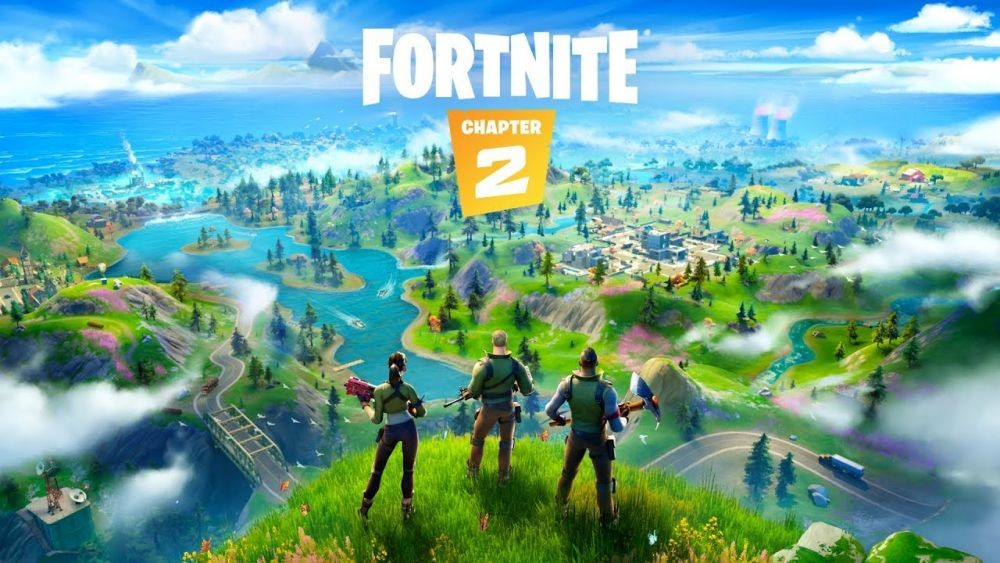
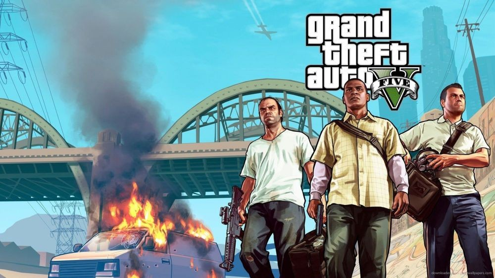
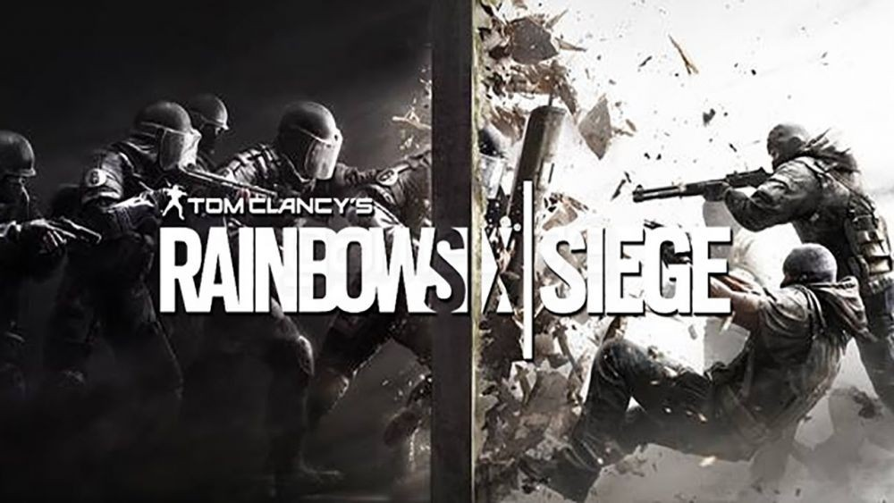
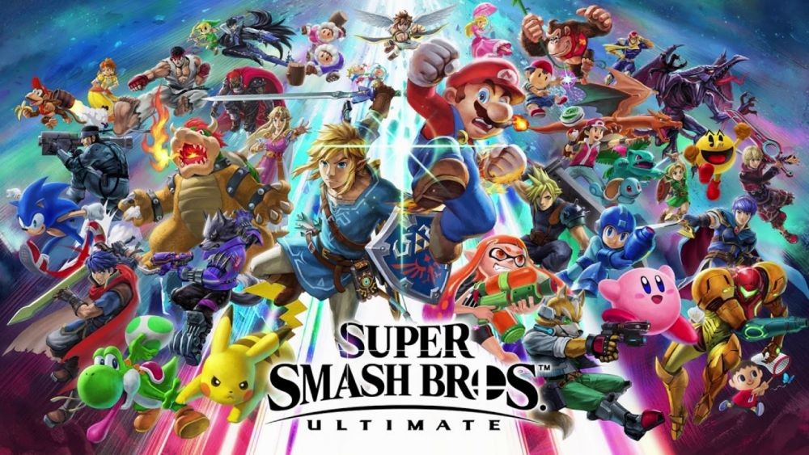

Ini dia 5 game terlaris sepanjang masa
Sebagai gamer sejati, sudah layak dan sepantasnya untuk mengikuti
perkembangan game yang ada. Tak hanya game kesenanganmu sendiri
saja, tetapi juga game yang paling populer. Karena jika tidak
begitu, bisa diartikan kamu ketinggalan zaman. Berikut ini adalah 10
besar game terpopuler di dunia hingga sekarang, tahun 2023.
1. Minecraft
Tak hanya di PC, Minecraft juga banyak dimainkan di smartphone.
Dengan fitur sandbox-nya, kamu bisa menciptakan berbagai hal
dengan kreativitasmu. Dikatakan hingga sekarang sudah ada 176
juta kopi yang terjual di berbagai platform. Itulah beberapa
game terpopuler di dunia saat ini. Harusnya masuk dekade 2023
ini bakal ada game baru yang bisa menggeser popularitas game di
daftar ini. Jika mereka tidak tergeser, itu berarti deretan game
ini hebat sekali, mengingat mereka bisa bertahan lebih dari 13
tahun.
2. Fortnite

Epic Games berhasil menggandeng tak hanya orang dewasa tetapi
juga anak-anak untuk bermain Fortnite. Tidak salah jika game
battle royale ini menjadi populer. Apalagi banyak event menarik
yang terjadi, seperti yang The End.
3. Grand Theft Auto V

Percaya tidak percaya, GTA V sudah dirilis Rockstar Games sejak
2013 lalu namun bertahan hingga sekarang. Dunia online dan
mod-nya sangat menyenangkan. Kamu bisa membuang waktumu untuk
melakukan hal liar di sana
4. Tom Clancy's Rainbow Six Siege

Berhati-hatilah dengan game ini karena bisa membuatmu kecanduan.
Secara konsep sebenarnya tidak berbeda jauh dengan Counter
Strike, kamu ditugaskan untuk menjinakkan bom atau melepaskan
sandera.
5. Super Smash BrosL Ultimate

Smash Bros punya komunitas yang kuat sedari dulu karena
gameplay-nya yang sangat kompetitif. Namun lebih dari itu, Smash
Bros disukai pemain kasual karena jumlah karakternya yang super
banyak dan dapat dimainkan hingga delapan orang.